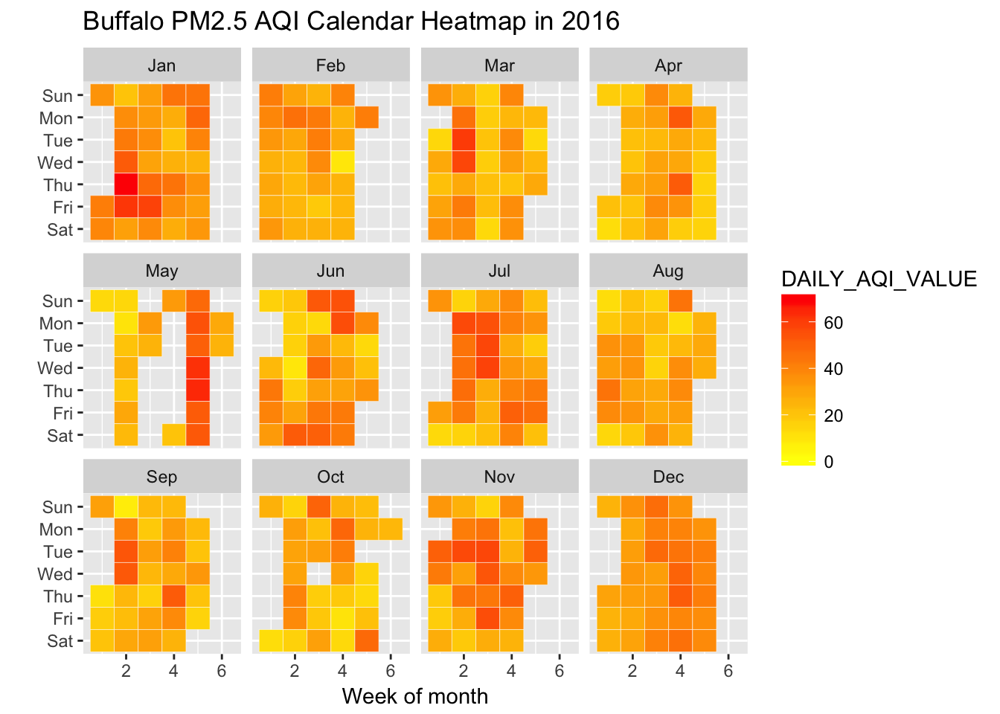
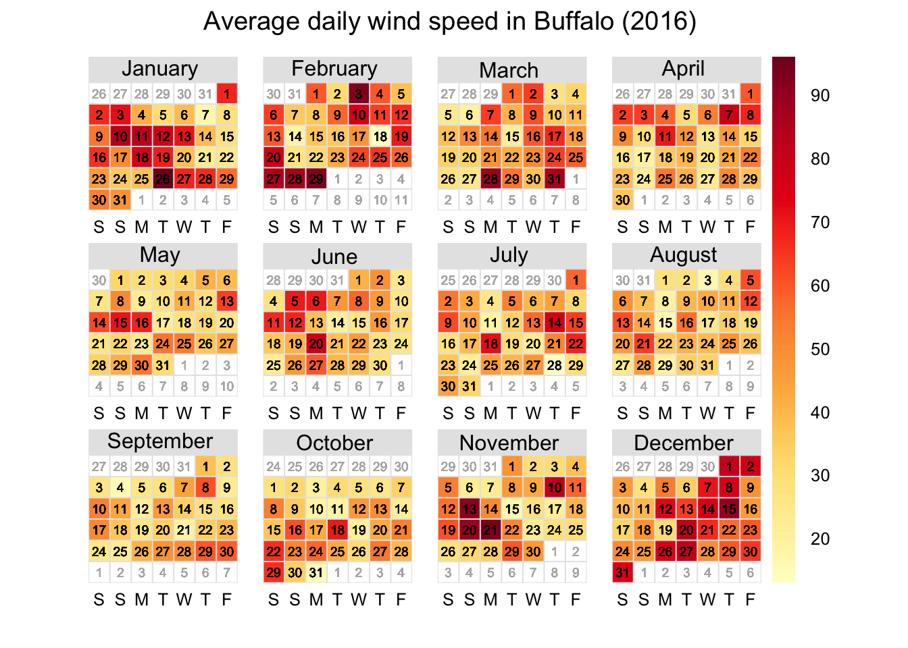
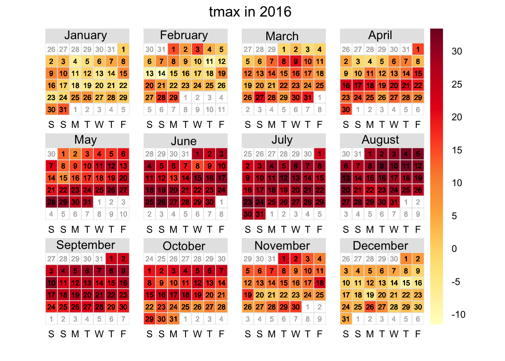

Each people are concerned about air quality because we need to breathe all the time. And with the air quality index data, we can know how clean or polluted our outdoor or indoor air is, along with associated health effects that may be of concern. And these AQI data uses different colors to present levels which tell people when to take action to protect their health.
However, many people like vivid images more than cold numbers. Based on this situation, I would like to make our statistic results more understandable and interesting for people to look and read. So calendar heatmap may be a good choice. People can see clearly from the heatmap how many unhealthy air days in the past months or years.
Additionally, it is not enough to just know what is air quality. So learning the possible infuencing factors is also important. I want to use daily temperature and wind data from the GHCND data we used in Geo503 chapter 8 class. With the calendar heatmap, we can add in those possible influential data to find if direct relationships exsist. Also some statistics should be done to proof the relationships. If the results show that low AQI days may be effected by low wind speed and high daily temperature, it would be a powerful reminder to let people make preventive measures in such weather, such as wearing a mask.
AQI data is downloaded from EPA AIR data website: (You need to choose the geographic positons and the pollutant, such as PM2.5 used in this project). Here is the website link: https://www.epa.gov/outdoor-air-quality-data
GHCND variables: AWND: Average daily wind speed (meters per second or miles per hour as per user preference); TMAX: Maximum temperature; TMIN: Minimum temperature;
library(plyr)
library(dplyr)
library(ggplot2)
library(openair)
library(ggplot2)
library(readxl)
library(rnoaa)
library(ggmap)
library(openair)
library(climdex.pcic)Load the PM2.5 air quality data in Buffalo in 2016:(some functions in the packages can only recognize “date” as the column name so we first need to change the name.)
mytable=read_excel("Data/Buffalo_PM2.5_AQI.xlsx")
names(mytable)[1]<-"date"According to the method mentioned in reference[1], I set some parameters to extract daily and monthly factors to make the heatmap plots below more easier and understandable to be shown:
dat=mytable
dat$month<-as.numeric(as.POSIXlt(dat$date)$mon+1)
dat$monthf<-factor(dat$month,levels=as.character(1:12),labels=c("Jan","Feb","Mar","Apr","May","Jun","Jul","Aug","Sep","Oct","Nov","Dec"),ordered=TRUE)
dat$weekday<-as.POSIXlt(dat$date)$wday
dat$weekdayf<-factor(dat$weekday,levels=rev(0:6),labels=rev(c("Sun","Mon","Tue","Wed","Thu","Fri","Sat")),ordered=TRUE)
dat$week <- as.numeric(format(dat$date,"%W"))
dat<-ddply(dat,.(monthf),transform,monthweek=1+week-min(week))Then turns to influential factors from GHCND data: this contains daily maximun temperatures, minimum temperatures and average wind speed data.
datadir="data"
st = ghcnd_stations()
st=dplyr::filter(st,element%in%c("TMAX","TMIN","AWND"))
coords=as.matrix(geocode("Buffalo, NY"))## Information from URL : http://maps.googleapis.com/maps/api/geocode/json?address=Buffalo,%20NY&sensor=falsedplyr::filter(st,
grepl("BUFFALO",name)&
between(latitude,coords[2]-1,coords[2]+1) &
between(longitude,coords[1]-1,coords[1]+1)&
element=="TMAX")## # A tibble: 3 x 11
## id latitude longitude elevation state name gsn_flag
## <chr> <dbl> <dbl> <dbl> <chr> <chr> <chr>
## 1 USC00301010 42.8833 -78.8833 -999.9 NY BUFFALO
## 2 USC00301018 42.9333 -78.9000 177.1 NY BUFFALO #2
## 3 USW00014733 42.9486 -78.7369 211.2 NY BUFFALO
## # ... with 4 more variables: wmo_id <chr>, element <chr>,
## # first_year <int>, last_year <int>d=meteo_tidy_ghcnd("USW00014733",
var = c("TMAX","TMIN","AWND"),
keep_flags=T)Then convert correct units of temperatures (convert to degrees C)
d_filtered=d%>%
mutate(tmax=ifelse(qflag_tmax!=" "|tmax==-9999,NA,tmax/10))%>%
mutate(tmin=ifelse(qflag_tmin!=" "|tmin==-9999,NA,tmin/10))%>%
mutate(awnd=ifelse(qflag_tmin!=" "|awnd==-9999,NA,awnd))%>%
arrange(date)Finally filter data in 2016 to match the 2016’s AQI data in Buffalo:
library(DT)
d_filtered_2016=filter(d_filtered,date>=as.Date("2016-01-01")&date<=as.Date("2016-12-31"))
head(d_filtered_2016)## # A tibble: 6 x 14
## id date awnd mflag_awnd mflag_tmax mflag_tmin qflag_awnd
## <chr> <date> <chr> <chr> <chr> <chr> <chr>
## 1 USW00014733 2016-01-01 68
## 2 USW00014733 2016-01-02 67
## 3 USW00014733 2016-01-03 72
## 4 USW00014733 2016-01-04 42
## 5 USW00014733 2016-01-05 30
## 6 USW00014733 2016-01-06 39
## # ... with 7 more variables: qflag_tmax <chr>, qflag_tmin <chr>,
## # sflag_awnd <chr>, sflag_tmax <chr>, sflag_tmin <chr>, tmax <dbl>,
## # tmin <dbl>Calendar heatmap: This can take a few seconds to show the plot about Calendar Heatmap of PM2.5 air quality in Buffalo:(in the plot I filter days which have AQI more then 50, just because in Air Quality Index(AQI) leves, more than 50 but less than 100 means moderate, more than 100 but less than 150 means unhealthy for sensitive groups.)

Dygraphics:
library(dygraphs)
library(zoo)##
## Attaching package: 'zoo'## The following objects are masked from 'package:base':
##
## as.Date, as.Date.numericlibrary(xts)##
## Attaching package: 'xts'## The following objects are masked from 'package:dplyr':
##
## first, lastlibrary(htmlwidgets)
library(widgetframe)
dt=xts(dat$DAILY_AQI_VALUE,order.by=dat$date)
dygraph(dt, main = "Daily AQI value in Buffalo, NY") %>%
dyRangeSelector(dateWindow = c("2016-01-01", "2016-12-31"))%>%
frameWidget(height =300)Through the two graphics above, it is clearly to find that calendar heatmap will be better for readers to get more inofrmation at first impression, such as how many unhealthy days in 2016? or which days are unhealthy days? In dygraphics people can see the trend of the changing about AQI values but it does not find daily data easily.
Plots the daily average wind speed data:
calendarPlot(d_filtered_2016, pollutant = "awnd", year=2016)
Plots the daily maximum temperatures:
calendarPlot(d_filtered_2016, pollutant = "tmax", year=2016)
According to plots above, we can reach the preliminary conclusion that high temperature may be correlative with unhealthy air quality. However, this hypothsis need to be proved so we do Pearson Correlation:
newdat= d_filtered_2016 %>% select(id, date, awnd, tmax,tmin)
newair=mytable %>% select(date, DAILY_AQI_VALUE)
newair$date=as.Date(as.POSIXct(newair$date))
unitdat=full_join(newdat, newair, by="date")
unitdat$awnd=as.numeric(as.character(unitdat$awnd))
cor.test(unitdat$awnd,unitdat$DAILY_AQI_VALUE,method="pearson")##
## Pearson's product-moment correlation
##
## data: unitdat$awnd and unitdat$DAILY_AQI_VALUE
## t = -1.2634, df = 352, p-value = 0.2073
## alternative hypothesis: true correlation is not equal to 0
## 95 percent confidence interval:
## -0.17022796 0.03731154
## sample estimates:
## cor
## -0.06718491cor.test(unitdat$tmax,unitdat$DAILY_AQI_VALUE,method="pearson")##
## Pearson's product-moment correlation
##
## data: unitdat$tmax and unitdat$DAILY_AQI_VALUE
## t = 1.9963, df = 352, p-value = 0.04667
## alternative hypothesis: true correlation is not equal to 0
## 95 percent confidence interval:
## 0.001590829 0.207752301
## sample estimates:
## cor
## 0.1058084cor.test(unitdat$tmin,unitdat$DAILY_AQI_VALUE,method="pearson")##
## Pearson's product-moment correlation
##
## data: unitdat$tmin and unitdat$DAILY_AQI_VALUE
## t = 0.47788, df = 352, p-value = 0.633
## alternative hypothesis: true correlation is not equal to 0
## 95 percent confidence interval:
## -0.07898188 0.12935473
## sample estimates:
## cor
## 0.0254629In Pearson correlation method, the results mean there are high correlations between x and y when p-value is less than 0.05 and the absolute value of sample estimates(r value) is higher. Based on this theory, the three results above show that only high temperatures have correlation with daily AQI values. So finally we get the conclusion that the air quality is worse when temperature rises.
Based on the results, we finlly get those conclusions: 1) Calendar heatmap is better than other analysis graphics in some daily applications. It is more clearly and friendly to find specfic days and to do statistics about number of days. 2) Due to results of Pearson correlation, comparing to wind speed and low temperature, high temperature is the only factor that has correlation with daily AQI values. So this means that when high temperature comes, there may be more unhealthy-air-quality days. According to this conclusion, people can do some useful and helpful solutions such as wearing a mask in high-temperature days to prevent air pollution.
Additionally, the data used in this project is limited so that there are errors exsisting obviously. I think one-year data is not enough and air quality problem is very complex so there may be other effective factors. Futher study should be done to prove the correlations.